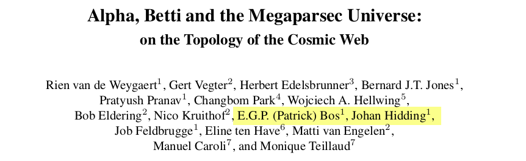
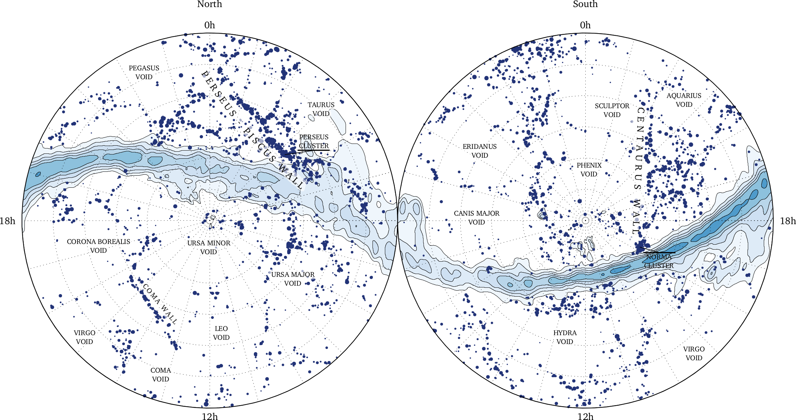
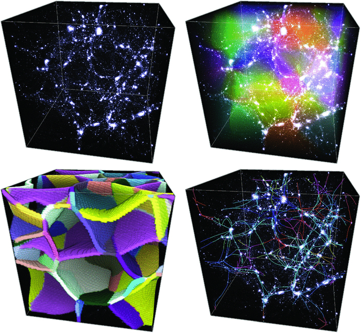
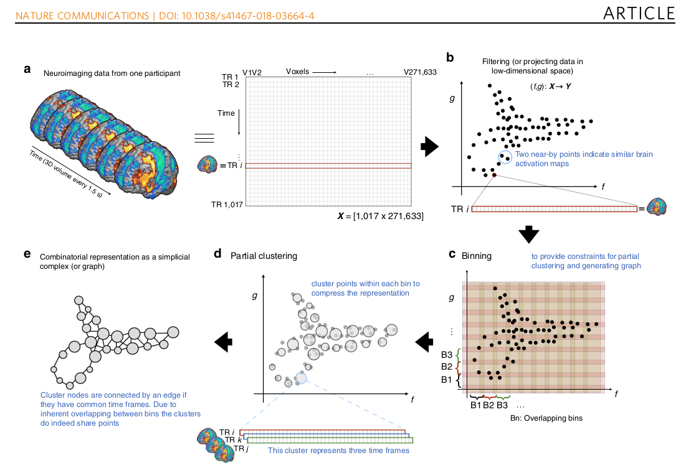
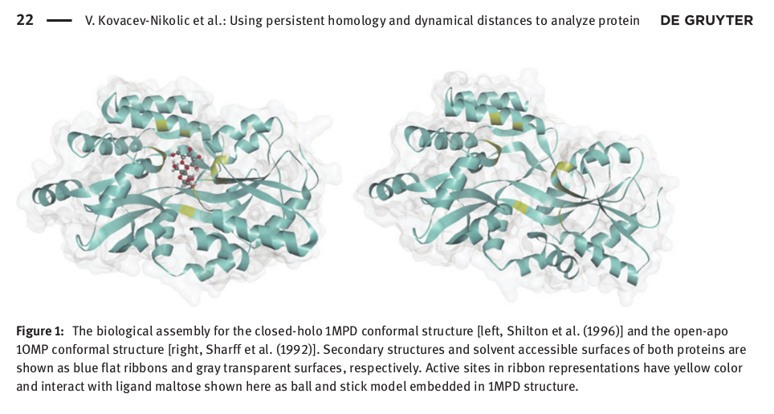
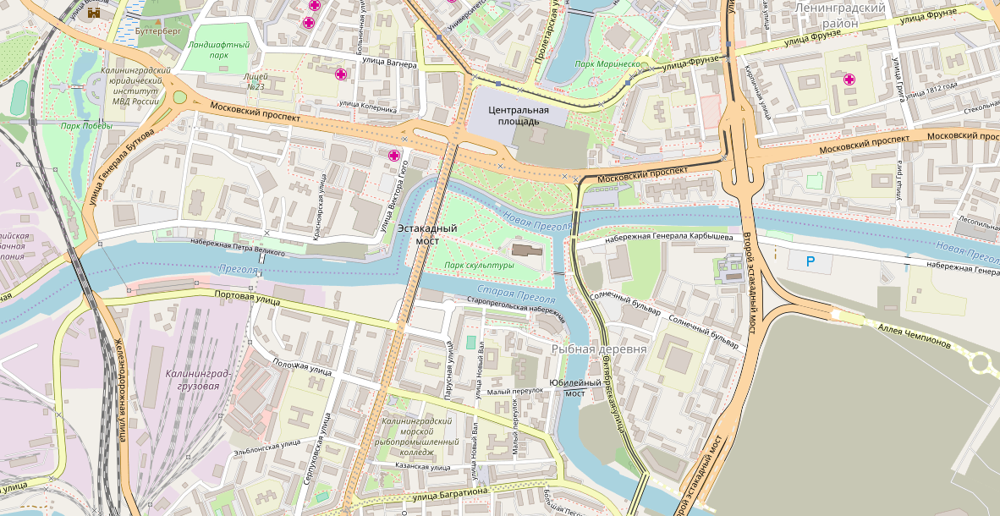
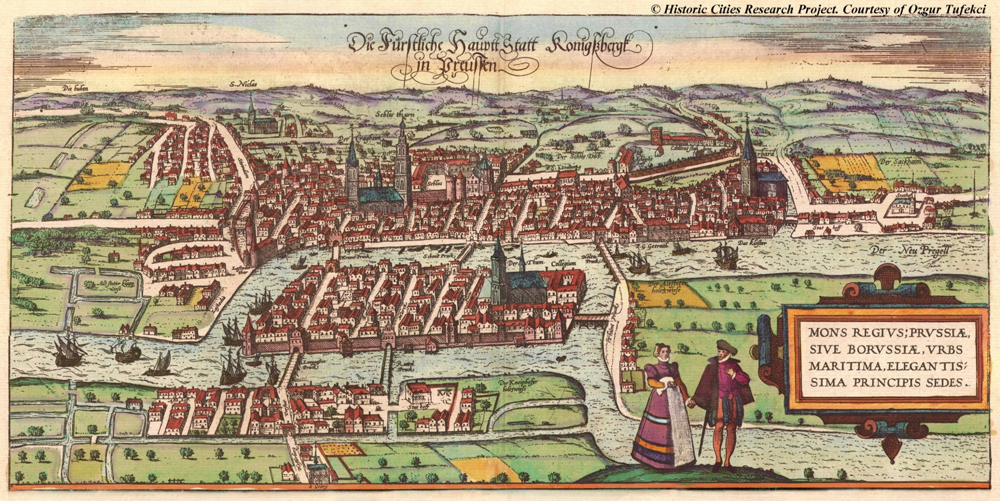
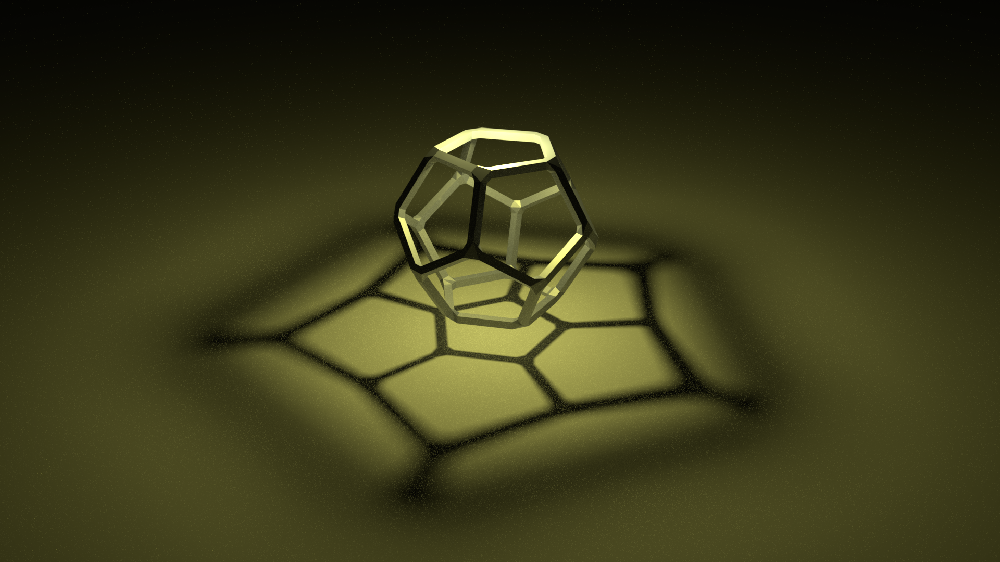
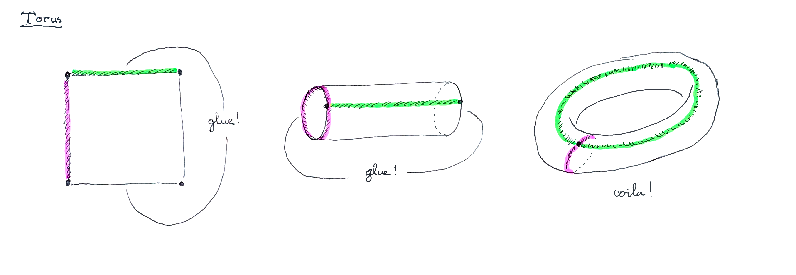
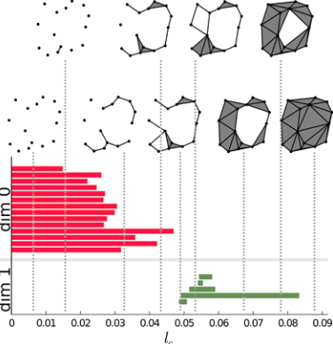

Topological Data Analysis
Johan Hidding (Netherlands eScience Center)
2018/06/21
Applications
- Quantification of shape
- Analysis of large multi-connected data sets:
- graphs, networks
- Classification of geometry:
- (medical) images
- proteines
- brain
- cosmic web
Cosmic Web

Galaxies

Simulations

- Sousbie (2011)
Brain science

Proteins

- Kovavec-Nikolic et al. 2016
What is TDA?
- Topological Invariants (15 min):
- Euler characteristic
- What is topology?
- Homology (15 min):
- Simplicial complex
- Betti numbers
- Persistence (15 min):
- Alpha shapes
- Persistence diagrams
The 7 Bridges of Königsberg
The city of Kaliningrad

then

Reduced to a graph
Euler Characteristic
\[\chi = V - E + F = 2\]
Regular polyhedra

Gotta catch'm all!
- \(n\) edges per vertex: \[E = nV/2\]
- \(m\) vertices per face: \[F = nV/m\]
\[V - \frac{nV}{2} + \frac{nV}{m} = 2\]
solve for integer \(n\) and \(m\)
- \(m = 3, n = 3\), tetrahedron
- \(m = 3, n = 4\), octahedron
- \(m = 3, n = 5\), isocahedron
- \(m = 4, n = 3\), cube
- \(m = 5, n = 3\), dodecahedron
No more possible solutions! Do try this at home!
Topology

But what is it really?
Dixit Wikipedia: Formally, let \(X\) be a set and let \(\tau\) be a family of subsets of \(X\). Then \(\tau\) is called a topology on \(X\) if:
- Both the empty set and \(X\) are elements of \(\tau\).
- Any union of elements of \(\tau\) is an element of \(\tau\).
- Any intersection of finitely many elements of \(\tau\) is an element of \(\tau\).
If \(\tau\) is a topology on \(X\), then the pair \((X, \tau)\) is called a topological space.
Open sets
The members of \(\tau\) are called open sets in \(X\).
Neighbourhoods
A subset of \(X\) including an open set containing a point \(x \in X\) is called a neighbourhood of \(x\).
The Torus
 \[V = 1\quad E=2\quad F=1\quad \chi = 0\]
(Simplicial) Homology
Simplicial complexes
boundary operator
- set of n-cells
- vertices, edges, faces, cells
- boundary operator \(\partial\)
- cells \(\to\) faces
- faces \(\to\) edges
- \(\dots\)
- vertices \(\to\) \(\emptyset\)
- Modulo 2 arithmetic
Euler characteristic
- again:
\[\chi = \#v - \#e + \#f - \#c\]
Betti numbers
- Formally, the i-th Betti number, denoted \(\beta_i\), is the rank of the i-th homology group on a topological space.
| dimension | description |
|---|---|
| 0 | number of objects |
| 1 | number of loops |
| 2 | number of cavities |
- Fundamental topological invariants, for example:
\[\chi = \beta_0 - \beta_1 + \beta_2 \dots\]
Filtration
- start adding n-cells (sorted by some measure)
- rule: boundary of cell should be added first!
| n-cell | \(\beta_0\) | \(\beta_1\) | \(\beta_2\) |
|---|---|---|---|
| 0 (vertex) | +1 | 0 | 0 |
| 1 (edge) | -1 | +1 | 0 |
| 2 (face) | 0 | -1 | +1 |
| 3 (cell) | 0 | 0 | -1 |
| \(\chi\) | + | - | + |
Persistence

\[\mathcal{P} = [{\rm time\ of\ death}] - [{\rm time\ of\ birth}]\]
The End
- List of Softwares
- To the notebook!
What about the eScience center?
- Write an extensive blog:
- introduce the subject
- link to live notebooks
- evaluate existing software
Extras
Derivation of Euler's polyhedron formula
- Draw any planar graph
- Mark a spanning tree \[\#e_{\rm t} = \#v - 1\]
- Draw the dual of the graph
- Mark the complement of the previous spanning tree in the dual graph \[\#e_{\rm d} = \#f - 1\]
- All vertices, edges and nodes are accounted for! \[\#e = \#e_{\rm t} + \#e_{\rm d}\]
Gauss-Bonnet theorem
- Total curvature relates to Euler characteristic
\[\int_M K\;dA+\int_{\partial M}k_g\;ds=2\pi\chi(M)\]
- Total curvature of torus is 0.